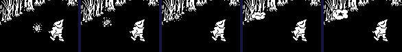
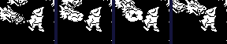
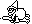
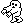
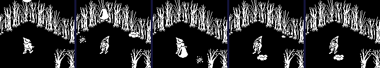

| Pentagram | Bolts, things from the sky and the monsters |
Sabreman fights with a bolt he throws, and it can harm only one kind of thing: what falls from the sky. Everything that lives in a room -- spiders, heads, spikes, the still hazards that line the paths -- is beyond it, to be walked round or jumped. This page is the bolt, the things from the sky, the score, and what makes a thing deadly. Knight Lore has none of it but the puff, its sparkle.
FIRE runs in the player's turn. A fire key newly pressed (FIRE_HELD makes it one bolt a press) takes the first free of the two bolt records, copies the legs' record into it and makes it graphic 150, moving eight units a turn the way he faces (BOLT_STEPS, by GET_SPRITE_DIR), starting two steps -- 16 units -- ahead of him and 4 higher, with flags $14 and a half-height of 8. A start outside the room's walls (he is in a doorway, or facing a wall close up) is taken back. Then BOLT flies it: the fall and the cut (DEC_DZ_AND_UPDATE_UVZ) as for anything, but never below Z 132, so it flies level; its graphic cycles 151, 150, 149; it tests the two things from the sky (BOLT_HIT) and shoots one down if it touches it; and if its move was cut short in U or V by anything else it becomes a puff (START_PUFF), graphics 64 to 71 a turn each (PUFF, END_PUFF; the animations page plays it), and then nothing.
| Facing | Way | Step in U | Step in V | Starts at U + | Starts at V + |
|---|---|---|---|---|---|
| 0 | -U | -8 | 0 | -16 | 0 |
| 1 | +U | 8 | 0 | 16 | 0 |
| 2 | +V | 0 | 8 | 0 | 16 |
| 3 | -V | 0 | -8 | 0 | -16 |
Fired in room 30, which is empty, facing -U from the middle, in a simulator when this page was built:
| Turn | Graphic | U | V | Z | ||
|---|---|---|---|---|---|---|
| 0 | 149 | the bolt | 112 | 128 | 132 | |
| 1 | 151 | the bolt | 104 | 128 | 132 | |
| 2 | 150 | the bolt | 96 | 128 | 132 | |
| 3 | 149 | the bolt | 88 | 128 | 132 | |
| 4 | 151 | the bolt | 80 | 128 | 132 | |
| 5 | 150 | the bolt | 72 | 128 | 132 | |
| 6 | 64 | the puff | 70 | 128 | 132 | stopped in U (+$0C bit 0) |
| 7 | 65 | the puff | 70 | 128 | 132 | stopped in U (+$0C bit 0) |
| 8 | 66 | the puff | 70 | 128 | 132 | stopped in U (+$0C bit 0) |
| 9 | 67 | the puff | 70 | 128 | 132 | stopped in U (+$0C bit 0) |
| 10 | 68 | the puff | 70 | 128 | 132 | stopped in U (+$0C bit 0) |
| 11 | 69 | the puff | 70 | 128 | 132 | stopped in U (+$0C bit 0) |
| 12 | 70 | the puff | 70 | 128 | 132 | stopped in U (+$0C bit 0) |
| 13 | 71 | the puff | 70 | 128 | 132 | stopped in U (+$0C bit 0) |

The bolt, and its puff against the wall.
BOLT_HIT tests only records 4 and 5, the things from the sky, and skips graphics below 8 and the puff: each axis, the distance between them no more than their half-sizes added, plus 2. Nothing else is a target. Anything else in the way is only an obstacle to the collision code, which cuts the bolt's move short and so makes it a puff -- the heads, the spiders and the still hazards carry on as if nothing happened. In room 6, from a place out of their way, a bolt thrown at one of the two pacing heads:
| Turn | The bolt | The head (graphic, U, V) |
|---|---|---|
| 0 | 93, 136, 112 | |
| 1 | graphic 149 at U 154 | 93, 136, 114 |
| 2 | graphic 64 at U 149, stopped | 93, 136, 116 |
| 3 | graphic 65 at U 149, stopped | 93, 136, 118 |
| 4 | graphic 66 at U 149, stopped | 93, 136, 120 |
| 5 | graphic 67 at U 149, stopped | 93, 136, 122 |
| 6 | graphic 68 at U 149, stopped | 93, 136, 124 |
| 7 | graphic 69 at U 149, stopped | 93, 136, 126 |
| 8 | graphic 70 at U 149, stopped | 93, 136, 128 |
| 9 | graphic 71 at U 149, stopped | 93, 136, 130 |

A bolt against a pacing head: the bolt puffs, the head paces on.
The bolts' test has one more use: the well counts the turns a bolt touches it (BOLT_TOUCHING, and see the quest).
| What | Against | What happens | Where |
|---|---|---|---|
| A bolt | a thing from the sky | shot down: points, and it becomes a puff; the bolt vanishes | SHOOT_DOWN |
| A bolt | the well | a turn of contact counted; 32 in one visit give the bucket | WELL |
| A bolt | anything else, or a wall | its move is cut short, and it becomes a puff | BOLT |
| Anything deadly (+$0D bit 7) | what it moves into | killed (+$0D bit 6) | ADJ_DU_FOR_OBJ_INTERSECT |
| Anything deadly (+$0D bit 5) | what moves into it | killed | ADJ_DU_FOR_OBJ_INTERSECT |
| A thing from the sky that homes | the player | nothing: it is not deadly | HOMER |
Every turn SKY_DROP counts DROP_TIMER down (it is reset at each room's start and after each drop, by RESET_DROP_TIMER -- 80 turns, or 8 once the first quest item is done: see the quest page). When it has run out, there is a chance of one in four each turn, two bits of the random number, of a drop: a free one of the two records at FLYERS gets a copy of FLYER_TEMPLATE -- Z 216, half-sizes 8, 8 and 8, flags $10 -- a U and a V of 104 plus a random number masked with $2F (104 to 119 or 136 to 151: never on the room's middle lines), and one of the eight graphics at DROP_GRAPHICS picked by three more bits of the random number. If it would overlap anything it is taken back. Nothing falls at all in a room with the well, a quest item or a piece of the pentagram (BAN_DROPS; 7 rooms as the game starts, and room 82 once the pentagram is showing).
| Slot | Graphic | Sprite | Update routine | Deadly | Points, by frame |
|---|---|---|---|---|---|
| 0 | 164 | HOMER | no | 512, 516 | |
| 1 | 160 | HOMER | no | 502, 506 | |
| 2 | 48 | HOMER | no | 140, 144 | |
| 3 | 80 |  | SKY_ROAMER | yes | 241, 245 |
| 4 | 168 |  | SKY_WALKER | yes | 522, 526 |
| 5 | 160 | HOMER | no | 502, 506 | |
| 6 | 48 | HOMER | no | 140, 144 | |
| 7 | 80 | SKY_ROAMER | yes | 241, 245 |
HOMER, the homer, flies at him: a speed in each of U, V and Z kept in sixteenths, each pulled 3 a turn towards his legs' U and V and his body's Z, up to 56 or down to -72, and a step each turn of the speed plus 8 over 16 -- at most 4 units either way; bumping into anything in U or V turns that speed round, so it bounces. It is never deadly: no update routine of a homer sets a kill bit, and its record starts with a clear +$0D. ROAMER (graphics 80 and 81, at SKY_ROAMER) and SKY_WALKER (168 to 171) are the ones that kill: they fall, then run straight at 4 a turn, turning at a bump, deadly both ways.
That chance is less of one than it looks. OBJECT_DONE stirs the random number once per object, with R and the turn counter, and with interrupts off nothing else touches R: a turn in which nothing changes runs exactly the instructions the turn before did. In room 30, empty, with the timer run out and the player standing still, the random number was read at the test for 150 turns: it moved by an even amount every turn, so its lowest bit never changed; it was odd, the test wants both low bits clear, and nothing fell. That was in the simulator; the same should hold on a Spectrum, whose R counts instructions the same way, but that is inferred. Anything that changes the turn's path -- turning, walking, firing -- stirs it again.
In room 30 again, with the drop timer run out by writing it, the player turning a quarter every six turns and, once something had fallen, firing between turns: a homer, graphic 165, fell 85 turns in, from Z 215 at (108, 145). It homed on him and hung round him for 39 turns without harming him, until a bolt hit it, at graphic 167, for 516 points:
| Turns after the drop | Graphic | U | V | Z | Speeds U, V, Z | Score |
|---|---|---|---|---|---|---|
| 0 | 165 | 108 | 145 | 215 | 3, -3, -3 | 0 |
| 6 | 167 | 112 | 141 | 205 | 21, -21, -21 | 0 |
| 12 | 165 | 123 | 131 | 189 | 39, -39, -39 | 0 |
| 18 | 167 | 138 | 118 | 166 | 33, -27, -57 | 0 |
| 24 | 165 | 148 | 111 | 136 | 15, -9, -69 | 0 |
| 30 | 167 | 151 | 110 | 128 | -3, 9, -51 | 0 |
| 36 | 165 | 147 | 117 | 128 | -21, 27, -33 | 0 |
| 38 | 167 | 145 | 121 | 128 | -27, 33, -27 | 0 |
| 39 | 65 | 145 | 121 | 128 | -27, 33, -27 | 516 |

The thing from the sky: falling, homing, and shot down.
SHOOT_DOWN makes the points out of the graphic number of what was hit, bits into BCD digits: the hundreds from bits 5 to 7, the tens from bits 2 to 4, the units from bits 6, 7 and 0. No digit can pass 7, so the result is always good BCD without a check. ADD_SCORE adds them and SHOW_SCORE copies the score straight to the screen. Things animate by changing their graphic, so the points depend on the frame the bolt catches. Run on its own for every graphic a thing from the sky can have:
| What | Graphics | Points |
|---|---|---|
| homers | 48-51, 160-167 | 48: 140, 49: 144, 50: 140, 51: 144, 160: 502, 161: 506, 162: 502, 163: 506, 164: 512, 165: 516, 166: 512, 167: 516 |
| the creature that roams | 80-81 | 80: 241, 81: 245 |
| the walker | 168-171 | 168: 522, 169: 526, 170: 522, 171: 526 |
Two bits of +$0D: bit 7, kills what it moves into, and bit 5, kills what touches it. MAKE_DEADLY sets both, and the collision code (ADJ_DU_FOR_OBJ_INTERSECT and the other two axes) passes the kill -- bit 6 -- to whichever party the other's bits say. These are all the routines that call it, found by searching the code for the call, with the graphics the update table gives them and the rooms that place those:
| Routine | Graphics | Where |
|---|---|---|
| STILL_DEADLY | 23, 30, 74-75 | 73 rooms, from 0, 1, 2, 4, 5, 7, 12, 13, 15, 16, 18, 20 ... |
| DEADLY_AND_DRAW | none (unreached) | |
| SPIKES | 28 | rooms 8, 14, 19, 41, 76, 103, 111 |
| DEADLY_BOBBER | 86 | rooms 11, 27, 42, 55, 62, 88, 107, 108 |
| DEADLY_PACER_U | 92 | rooms 29, 34, 47, 83, 99, 120, 130 |
| DEADLY_PACER_V | 93 | rooms 6, 29, 49, 129, 147 |
| SPIDER | 89 | 16 rooms, from 3, 9, 13, 14, 15, 24, 26, 53, 69, 98, 106, 109 ... |
| ROAMER | 16-17, 80-81 | rooms 20, 52, 76, 96, 106, 117, 125, 131; and from the sky |
| SKY_WALKER | 168-171 | no room; and from the sky |
A killed player's legs become the puff and his body with them; when the puff is over, both records are empty and the main loop starts a life (see rooms and doorways for where).